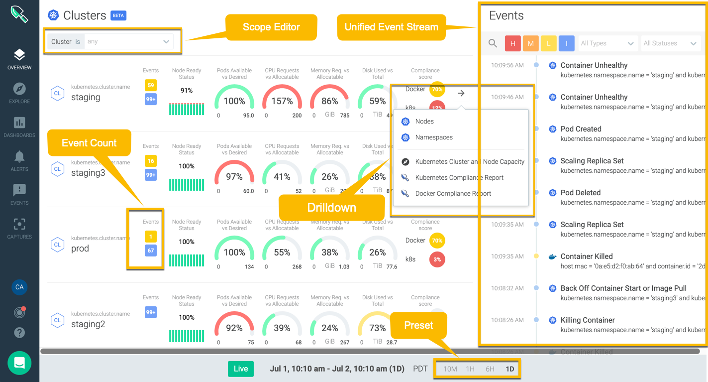
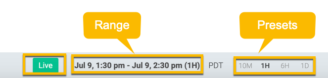
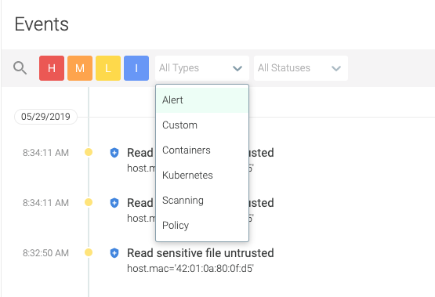

Overview
Overview is a beta feature.
Overview leverages Sysdig's unified Kubernetes data platform to monitor, secure, and troubleshoot your Kubernetes clusters and workloads. It provides a unified view of the health, risk, and capacity of your Kubernetes infrastructure— a single pane of glass for Kubernetes Clusters, Nodes, Namespaces, and Workloads across a multi- and hybrid-cloud environment. You can easily filter by any of these entities and view associated events and health data.
Overview shows metrics prioritized by event count and severity, allowing you to get to the root cause of the problem faster. Sysdig Monitor polls the infrastructure data every 10 minutes and refreshes the metrics and events on the Overview page with the system health in real time.
Key Benefits
Overview provides the following benefits:
Show unified view of the health, risk, resource use, and capacity of your infrastructure environmentat massive scale
Render metrics, security events, compliance CIS benchmark results, and contextual events in a single location
Eliminate the need for stand-alone security, monitoring, and forensics tools
View data on-the-fly by workload or by infrastructure
Display contextual live event stream from alerts, Kubernetes, containers, policies, and image scanning results
Surface entities iintelligently based on event count and severity
Drills down from Clusters to Nodes and Namespaces
Support Iinfrastructure monitoring of multi- and hybrid- cloud environments
Expose relevant information based on core operational users :
DevOps / Platform Ops
Security Analyst
Service Owner
General Guidelines
Enable Overview
When Overview is enabled for the first time, Sysdig Monitor fetches data and generates associated pages. Because the poll interval is 10 minutes, you might have to wait up to 10 minutes to fully load the Overview data on the UI.
If the environment is created for the first time, and the Overview feature is immediately enabled, wait for, at the maximum, 1 hour to see the Overview pages with the necessary data.
Overview uses time windows in segments of 1H, 6H and 1D, and therefore wait respectively for 1H, 6H and 1D to be able to see data on the Overview pages.
If enough data is not available for the first 1 hour, the "No Data Available" page will be presented until the first 1 hour passes.
Tuning Overview
Sysdig Monitor leverages caching mechanism to fetch pre-computed data for the Overview screens. If pre-computed data is unavailable, data fetched will be non-computed data, which needs to calculated before displaying. This additional computational time adds delays. Caching is enabled for Overview but in order to get optimum performance from Overview, you will have to wait for 1H, 6H, and 1D windows for the first time you enable Overview. After the specified time in time windows has passed, the data will be automatically be cached with every passing minute.
Accessing the Overview User Interface
You can access and set the scope of Overview in the Sysdig Monitor UI or with the URL: https://YourSysdigMonitorEnv/#/overview/.
Click Overview in the left navigation, then select one of the Kubernetes entities:
About the Overview User Interface
The Overview interface opens to the Cluster Overview page. This section describes the major components of the interface and the navigation options.
|  |
Overview Rows
Each row represents a Kuberntes entity: a cluster, node, namespace, or workload. In the screenshot above, each row shows a Kubernetes cluster.
Navigating rows is easyClick on the Overview icon in the left navigation and choose an Overview page, or drill down into the next Overview page to explore the next granular level of data. Each Overview page shows 10 rows by default and a maximum of 100 rows. Click
Load Moreto display additional rows if there are more than 10 rows per page.
Ability to select a specific row in an Overview page.
Each row contains the scope of the relevant entity that it is showing data for. Clicking a specific row leads to deselecting rest of the rows (for instance, selecting staging deselects all other rows in the screenshot above) to focus on the scope of the selected entity, including the events which are scoped out by that row. Further, the Live badge will change to Paused, implying rows will not be updated regardless of the new data coming in. Pausing to focus on a single row provides a snapshot of what is going on until at the moment with the entity under purview.
Entities are listed according to the severity and number of events detected in them, not by how new the events are
Rows are sorted by the count and severity level of the events associated with the entity and are displayed in descending order. The items with the highest number of high severity events are shown first, followed by medium, low, and info. This organization helps to highlight events demanding immediate attention and to streamline troubleshooting efforts, in environments that may include thousands of entities.
Scope Editor
Scope Editor allows targeting down to a specific entity, such as a particular workload or namespace, from environments that may include thousands of entities. The levels of scope, determined by Kubernetes hierarchy, progresses from Workload to Cluster where Cluster being at the top level. In smaller environments, using the Scope Editor is equivalent to clicking a single row in an Overview page where no scope has been applied.
Cluster: The highest level in the hierarchy. The only scope applied to the page is Cluster. It allows you to select a specific cluster from a list of available ones.
Node: The second level in the hierarchy. The scope is determined by Cluster and Node. Selection is narrowed down to a specific node in a selected cluster.
Namespace: The third level in the hierarchy. The scope is determined by Cluster and Namespace. Selection is narrowed down to a specific namespace in a selected cluster.
Workloads: The last entity in the hierarchy. The scope is initially determined by Cluster and Namespace, then the selection is narrowed to a specific Deployment, Service, or StatefulSet. Choosing all three options are not allowed.
Time Navigation
The Overview feature is based around time. Sysdig Monitor polls the infrastructure data every 10 minutes and refreshes the metrics and events on the Overview page with the system health. You select how to view this gathered data by choosing a Preset interval and a time Range.
Presets
Presets are a way of visualizing data that Sysdig Monitor gathers every 10 minutes. Select a preset to determine the data sample to be displayed. Overview supports the following presets:
10 Minutes: Data polled for the last ten minutes.
1 Hour: Data polled for the last one hour. This is the default value.
6 Hour: Data polled for the last six hour.
1 Day: Data polled for the last day.
Presets work in conjunction with Range selections. Selecting a particular preset interval refreshes Range selection and reloads the Overview rows and events subsequently. For example:
10 Minutes: Resets the Range to Jul 9, 2.20 pm - Jul 9, 2.30 pm.
6 Hour: Resets the Range to Jul 9, 8.30 am - Jul 9, 2.30 pm.
1 Day: Resets the Range to Jul 8, 2.30 pm - Jul 9, 2.30 pm.
|  |
Because metrics and events are refreshed every 10 minutes on the Overview page, if you stay for more then 10 minutes on the Overview page, the data will be updated to show the newly-computed values.
Note
Presets are global throughout the Sysdig Monitor interface. For example, if you select 10 minutes in the Explore view, the Overview preset will also be 10 minutes, and vice versa. Choosing an unsupported Preset in Explorer falls back to 1 day in Overview.
Range
Range shows both date and time interval as well as the selected Presets in parenthesis. The Range indicated on the UI is determined by Presets. The time given is the closest time interval and by default, it is the current date and time preset by 1 hour. See Presets to understand how Range works with Presets.
Time Format
Overview supports UTC and PDT time formats. Use the toggle button next to Range to change the time format for the slot shown in Range. The default is PDT.
Live
The Live badge shows if the feed (Overview rows with data) is Live or Paused.
Live: the data is continuously updating based on the 10-minute polling of the Sysdig back end. The Overview feed is normally always Live.
Paused: When a specific row is selected, the data refresh pauses and the rows will not be updated with new data coming in.
Unified Stream of Events
Get a unified view of security, monitor, and custom incidents in your environment with the Event tab. With the live stream of events, you know what's happening with your selected entity on the fly, be it a policy violation, a write operation to /etc, or termination of a container. Each event is intelligently populated with end-to-end metadata associated with it in order to give you the context and to enable you to troubleshoot. For example, an event related to the termination of a container gives you insightful information, such as container ID, host mac address, image ID, and so on enough to troubleshoot.
Event Types
Overview renders the following event types:
Alert: See Alerts.
Custom: Ensure that Custom labels are enabled to view this type of events.
Containers: Events associated with containers.
Kubernetes: Events associated with Kubernetes infrastructure.
Scanning: See Image Scanning.
Policy: See Policies.
|  |
Event Statuses
Overview renders the following alert-generated event statuses:
Triggered: The alert condition has been met and still persists.
Resolved: A previously existed alert conditionno longer persists.
Acknowledged: The event has been acknowledged by the intended recipient.
Un-acknowledged: The event has not been acknowledged by an intended recipient. All events are by default marked as Un-acknowledged.
Troubleshoot with Overview
Color Scheme
The green chart indicates the selected object is healthy and no further actions are needed. The red chart alerts a potential problem and you can drill down to further investigate into the next level, or go straight to the Explore menu.
Drill-Down
Every Overview row, when hovered over, shows a right arrow, which, when clicked, opens a drop-down menu with links. These links are used to drill-down deeper for troubleshooting purposes.
The available options are:
Overview: Navigates to an Overview page which is lower in the hierarchy, thus performing a drill-down.
Explore: Navigates to the Explore dashboards page for troubleshooting.
Secure: Launches Sysdig Secure and navigates to the scanning results. Applicable only if Sysdig Secure is deployed in the environment.
No Data
For some reason, if compliance data is not available, Overview falls back on network performance. Showing No data except for compliance reveals Kube state metrics is not turned on. Enable Kube state metrics and log in again.
Events
Events represent a change in the state of a monitored entity, which in turn can manifest a potential problem. The live stream of events shows potential issues in real time with the necessary context to help you troubleshoot. Click respective events to learn more and take further actions. For example, a "Read sensitive file untrusted" event indicates a security issue. You can select the issue and view commands executed on the container as well as the capture files that contain system calls and other OS events that can be analyzed to zero in on the root cause.